Responder con fuentes: cómo usar Gemini Notebook y Claude sin que la IA invente
Una guía paso a paso, sin tecnicismos, para estudiantes y abogados que quieren que la inteligencia artificial trabaje con la ley, el fallo o el contrato que tienen en la mano, y no con lo que «recuerda».
EVA · Escuela de Derecho, Pontificia Universidad Católica de Valparaíso
Versión de prueba del 3 de noviembre de 2026 · Revisión jurídica pendiente
Resumen
Los asistentes de inteligencia artificial escriben con seguridad, aunque no sepan la respuesta. En Derecho eso tiene un costo: fallos inexistentes, artículos mal citados y sanciones a abogados en Chile y en el extranjero. Esta guía enseña un método para que la IA responda desde tus fuentes. Primero explica, en simple, cómo funciona por dentro una herramienta como Gemini Notebook (el producto de Google que hasta julio de 2026 se llamaba NotebookLM). Después la usa paso a paso con normas chilenas reales y, al final, la combina con Claude para redactar una minuta sin perder la trazabilidad de cada dato. Todas las capturas son reales y se tomaron el 2 de noviembre de 2026, incluidos dos tropiezos que conviene conocer.
Palabras clave: inteligencia artificial, alucinaciones, fuentes oficiales, Gemini Notebook, NotebookLM, Claude, investigación jurídica, verificación de citas, secreto profesional.
La idea en una frase
1 · IntroducciónPor qué la IA inventa, y por qué importa en Derecho
Un asistente como ChatGPT, Gemini o Claude no consulta una biblioteca cuando le preguntas algo. Escribe, palabra por palabra, la continuación más probable de tu texto. Casi siempre eso produce respuestas útiles. Pero cuando no sabe, no se detiene: completa igual, con el mismo tono seguro. A eso se le llama alucinación.
En Derecho el problema se nota rápido, porque todo se puede comprobar: un rol existe o no existe, un artículo dice algo o no lo dice.
El caso más conocido es Mata v. Avianca (2023): un abogado de Nueva York presentó fallos inventados por ChatGPT. Cuando dudó, le preguntó al propio ChatGPT si el caso «Varghese» era real, y la herramienta le aseguró que sí. El tribunal multó con 5.000 dólares a los dos abogados y a su estudio. En Chile, la Corte Suprema suspendió por un mes y multó con 5 UTM a una abogada que citó obras inexistentes (rol 23.322-2025); según el comunicado del Poder Judicial, las citas venían de un chatbot de IA.
2 · Glosario visualLos conceptos, en simple
Antes de tocar ninguna herramienta, estas son las palabras técnicas que vas a encontrar. Cada una trae una comparación con algo conocido del mundo jurídico.
Modelo de lenguaje
El «motor» de un asistente de IA. Aprendió de enormes cantidades de texto a predecir qué palabra sigue a otra.
Como en Derecho: un practicante que leyó miles de escritos y redacta muy bien, pero que nunca abrió el expediente de tu caso.
Token
Un trozo de palabra. Los modelos no leen letras ni palabras, sino estos trozos. Con ellos se mide cuánto texto cabe y cuánto cuesta.
Como en Derecho: las fojas de un expediente: la unidad con que se cuenta su tamaño.
Ventana de contexto
Cuánto texto puede tener «a la vista» el modelo en una conversación. Lo que queda fuera, no lo ve.
Como en Derecho: lo que cabe sobre el escritorio. Que esté en la mesa no garantiza que se lea con la misma atención todo.
Alucinación
Cuando la IA genera algo falso con total fluidez: un fallo, una cita o un dato que no existen.
Como en Derecho: citar de memoria un fallo «que alguien comentó en clase» sin haberlo leído nunca.
Fuente
El documento que le entregas a la herramienta para que responda: una ley en PDF, un fallo, un contrato, una página web.
Como en Derecho: los documentos acompañados. Lo que no se acompaña, no consta.
Cita
El número que aparece al final de una frase de la respuesta. Al pulsarlo, se abre el pasaje de la fuente que la herramienta usó.
Como en Derecho: «a fojas 34». Te dice dónde mirar. No prueba que la frase sea correcta: eso lo compruebas tú.
RAG o anclaje en fuentes
Siglas en inglés de «generación aumentada por recuperación». Antes de responder, el sistema busca en tus documentos los pasajes útiles y responde a partir de ellos. Google llama a su versión «anclaje en las fuentes».
Como en Derecho: el procurador que, antes de contestar, va a buscar la carpeta del caso y te trae marcadas las páginas que importan.
Conector
Un permiso para que el asistente lea o use otro servicio tuyo, como Google Drive o el correo.
Como en Derecho: un poder con facultades específicas: sirve para lo que dice, y conviene darlo acotado.
MCP
Model Context Protocol: un estándar abierto, presentado por Anthropic en 2024, para que los asistentes de distintas empresas se conecten con otros programas de la misma manera.
Como en Derecho: un formulario tipo: si todos lo usan, cualquier oficina puede tramitarlo.
Skill o receta
Un paquete de instrucciones que le enseña a Claude a hacer una tarea siempre de la misma manera. Se sube como archivo ZIP.
Como en Derecho: el instructivo interno del estudio para redactar un tipo de escrito.
Encargo o «prompt»
Lo que le escribes a la IA. Mientras más claro el encargo (qué, con qué fuentes, con qué reglas, en qué formato), mejor el resultado.
Como en Derecho: la minuta de instrucciones que le dejas a un ayudante.
Cuenta personal o institucional
Las herramientas tratan distinto tus datos según la cuenta: una cuenta personal de Google no tiene las mismas garantías que una de Workspace o Education de una institución.
Como en Derecho: no es lo mismo dejar un documento en tu casa que en el archivo del estudio.
3 · La teoríaCómo funciona Gemini Notebook por dentro
Gemini Notebook es una herramienta gratuita de Google que responde a partir de las fuentes que tú subes a un «cuaderno» y marca con un número el pasaje que usó para cada frase. Se llamaba NotebookLM hasta el 16 de julio de 2026; la dirección antigua, notebooklm.google.com, hoy lleva a notebook.google.com.
- Google la muestra como un experimento, Project Tailwind.
- Se lanza como NotebookLM y suma resúmenes en audio, mapas mentales y más idiomas.
- Según Google, el chat puede tener a la vista hasta un millón de tokens: más de mil páginas.
- Cambia de nombre a Gemini Notebook (Google, 2026).
3.1 Los tres pasos
Por dentro, una herramienta que «responde desde tus documentos» hace tres cosas, en este orden. La idea se publicó en 2020 con el nombre de RAG (Lewis et al., 2020).
Figura 1
Responder desde tus fuentes: buscar, entregar y generar
3.2 Qué dice la evidencia
En una prueba pequeña de 2025, con 15 respuestas por herramienta, el 13 % de las respuestas de NotebookLM traía alguna afirmación sin respaldo, frente al 40 % de ChatGPT y de Gemini. En las tres, el error típico no fue inventar desde cero, sino estirar lo que decía la fuente (Hagar et al., 2025). Es un estudio chico y sobre un solo tema, pero coincide con lo que verás en esta guía.
Tener mucho texto a la vista tampoco es leerlo todo igual de bien: los modelos aprovechan peor la información que queda en medio de un texto largo (Liu et al., 2024). Por eso conviene un cuaderno por tema, con pocas fuentes y bien elegidas.
Tabla 1
Cinco maneras de equivocarse aun trabajando con fuentes
| Error | Qué pasa | Ejemplo jurídico |
|---|---|---|
| Cita inventada | El pasaje no existe | Un considerando que el fallo no tiene |
| Cita que no dice eso | El pasaje existe, pero no respalda la frase | Se cita el voto de minoría como si fuera la decisión |
| Sobreinterpretación | Estira o simplifica lo que dice la fuente | «Multa de hasta 4 %» sin decir a quién se aplica |
| Mezcla de fuentes | Confunde vigente con proyecto, o una norma extranjera con una chilena | Presentar el proyecto de ley de IA como ley vigente |
| Fuente vacía | El sistema leyó un aviso de error en vez del documento | Lo verás de verdad en el paso 2 |
4 · PreparaciónAntes de empezar
Tabla 2
Qué vas a usar y para qué
| Herramienta | Para qué | Costo |
|---|---|---|
| Gemini Notebook | Responder desde tus fuentes, con citas | Tiene plan gratuito |
| Claude | Buscar fuentes, ordenar y redactar la minuta | Tiene plan gratuito; la función «Investigación» es de pago |
| Google Drive | Pasar la nota de una herramienta a la otra | Gratis |
| LeyChile, EUR-Lex, Poder Judicial | Descargar las fuentes oficiales | Gratis |
Para practicar usaremos normas públicas: la Ley 21.719 sobre datos personales (rige desde el 1 de diciembre de 2026; un proyecto para postergarla al 15 de octubre de 2027 fue aprobado por el Senado y sigue en la Cámara), el Reglamento europeo de inteligencia artificial (Reglamento (UE) 2024/1689) y la tramitación del proyecto de ley de IA chileno (boletín 16821-19), que todavía no es ley.
Crear el cuaderno
Objetivo: tener un espacio propio para un solo tema, con sus fuentes.
- Entra a notebook.google.com con tu cuenta de Google.
- Pulsa «Nuevo cuaderno» y ponle un nombre claro, por ejemplo «IA y datos personales en Chile».
- Mira la pantalla: tiene tres paneles (Figura 2).
Figura 2
Un cuaderno nuevo en Gemini Notebook y sus tres paneles
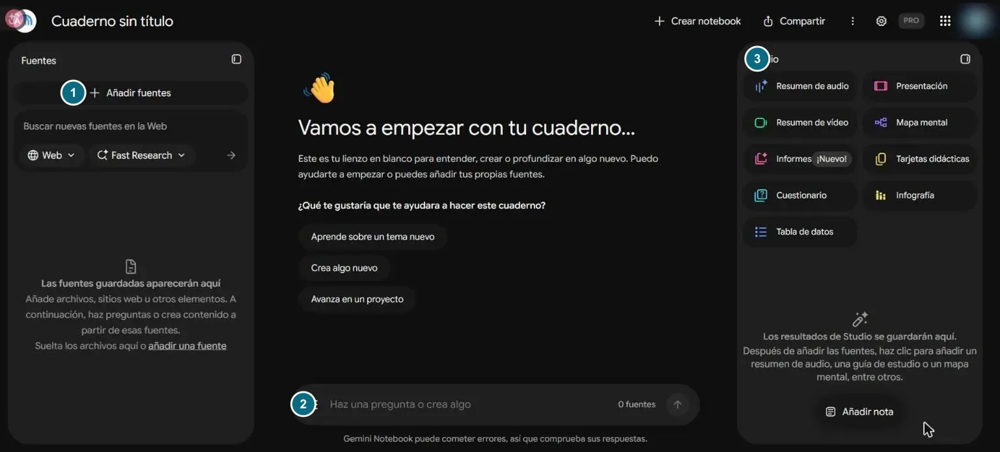
Conseguir las fuentes oficiales
Objetivo: tener el texto oficial de cada norma en un archivo PDF.
Lo primero que uno intenta es pegar el enlace de la ley. Lo probamos con la Ley 21.719 en LeyChile (Figura 3) y pasó algo que conviene conocer.
Figura 3
Pegar enlaces como fuente
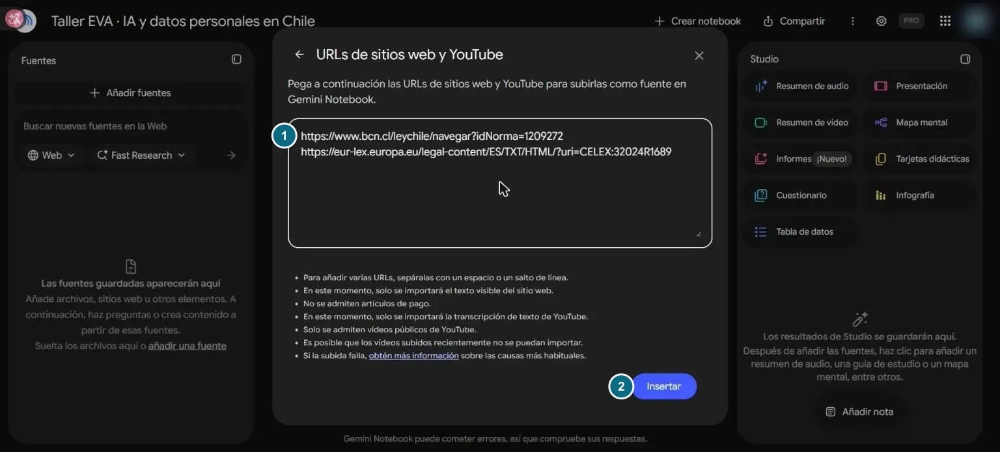
Figura 4
El primer tropiezo: una fuente vacía
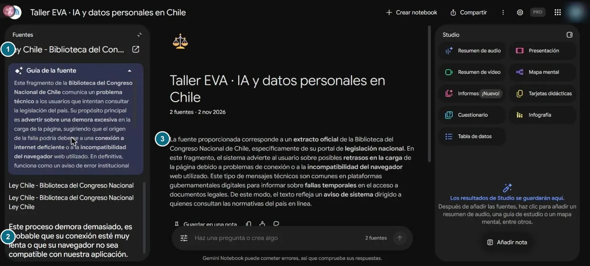
La solución es descargar el PDF oficial y subirlo como archivo:
- En LeyChile, abre la norma y pulsa el ícono de descarga.
- Elige «Descargar ahora sin firma» (o «con firma electrónica avanzada», si necesitas acreditar autenticidad) (Figura 5).
- Haz lo mismo con las otras fuentes: EUR-Lex, Diario Oficial o el Poder Judicial también ofrecen PDF.
Figura 5
Descargar la Ley 21.719 desde LeyChile
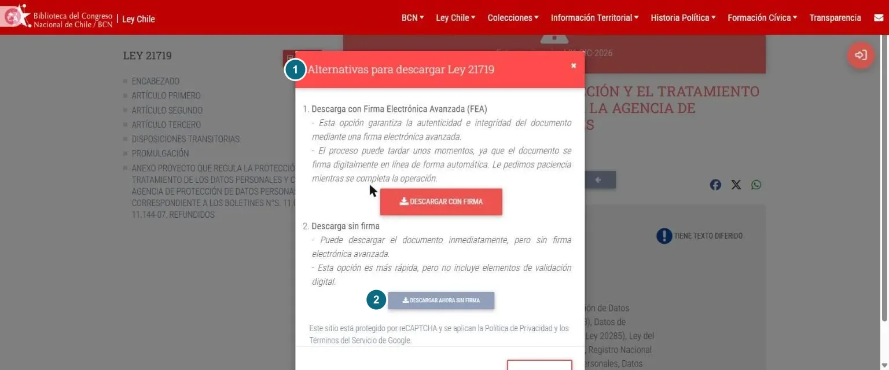
Cargar las fuentes y comprobar que se leyeron
Objetivo: que el cuaderno lea de verdad cada documento.
Figura 6
Las formas de añadir fuentes
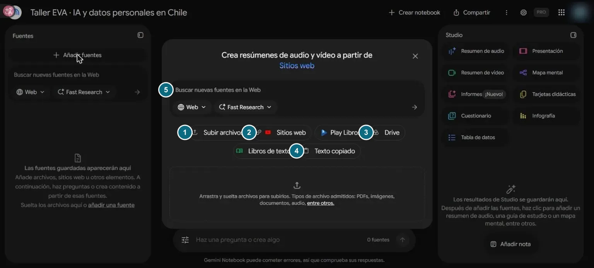
- Pulsa «Añadir fuentes» → «Subir archivos» y elige los PDF que descargaste.
- Haz clic en el nombre de cada fuente: se abre su «Guía de la fuente», un resumen breve, y el texto completo.
- Comprueba que dice lo que esperabas. Si ves un aviso o un menú en vez del documento, es una fuente vacía: elimínala y vuelve al paso 2.
- Usa las casillas junto a cada fuente para elegir cuáles se consultan. Ojo: en nuestra prueba, al recargar la página volvieron a quedar todas marcadas.
Fijar tus reglas para el chat
Objetivo: que el cuaderno diga «no consta» cuando algo no está en tus fuentes.
- Abre el menú ⋮ arriba a la derecha → «Configurar chat».
- En «Define el objetivo, el estilo o el rol de la conversación» elige Personalizado.
- Pega las reglas del recuadro y pulsa «Guardar» (Figura 7). Valen para todo el cuaderno.
Actúa como ayudante de investigación jurídica en Chile. Responde solo con lo que digan las fuentes seleccionadas. Si algo no está en ellas, escribe «No consta en las fuentes» y no lo completes con conocimiento general. Indica artículo e inciso (o considerando) de cada afirmación. Distingue norma vigente, norma con vigencia diferida y proyecto de ley.
Figura 7
La ventana «Configurar conversación» con reglas propias
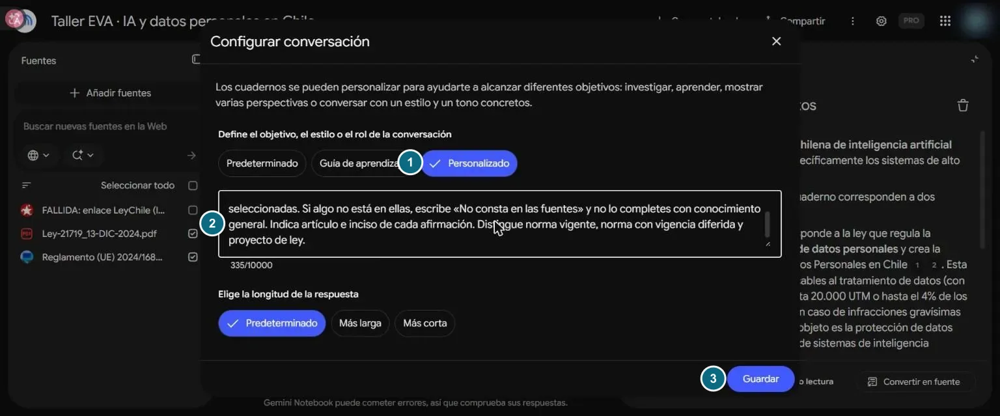
Preguntar y abrir cada cita
Objetivo: obtener una respuesta con citas y comprobar cada una.
¿Qué organismo crea la Ley 21.719 para fiscalizar su cumplimiento y qué naturaleza jurídica tiene? Responde solo con las fuentes y señala el artículo.
Figura 8
Una respuesta con citas numeradas
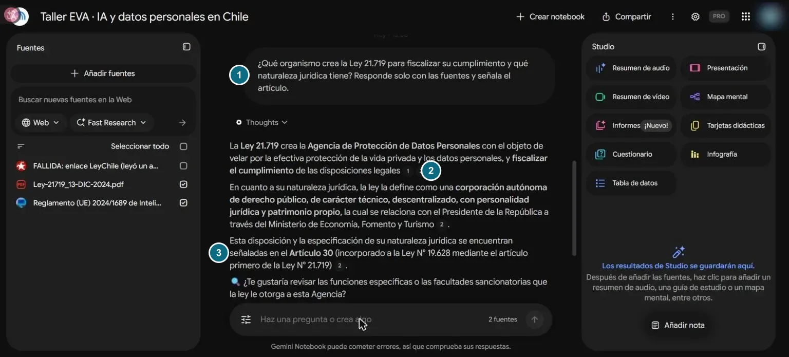
Ahora el paso que no se delega: pulsa cada número.
Figura 9
La cita abierta: el pasaje exacto de la ley
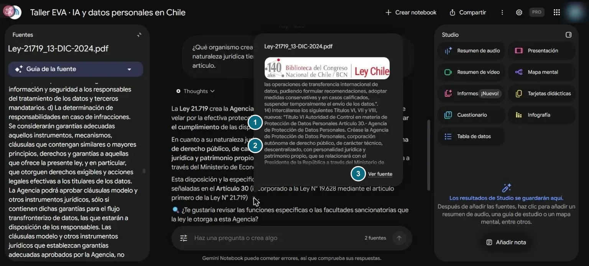
Hacer la pregunta trampa
Objetivo: comprobar que tus reglas funcionan antes de confiar en el cuaderno.
Pregunta por algo que sabes que no está en tus fuentes. En Chile no hay, a noviembre de 2026, una ley de inteligencia artificial vigente: solo un proyecto.
¿Qué sanciones establece la ley chilena de inteligencia artificial vigente para los sistemas de alto riesgo?
Figura 10
El cuaderno no inventa la ley, pero simplifica las multas
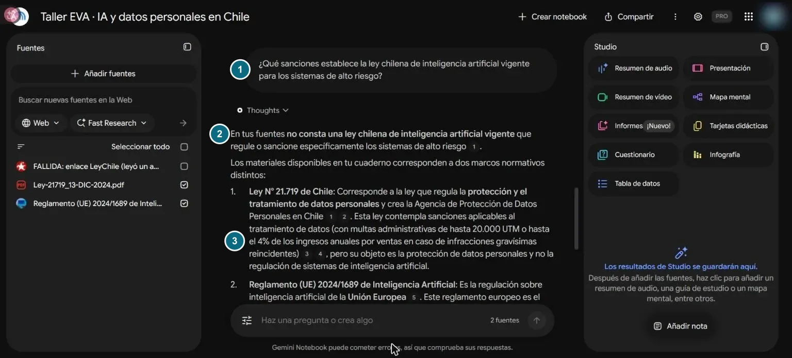
Buscar más fuentes, con filtro
Objetivo: descubrir fuentes nuevas sin mezclar las oficiales con cualquier cosa.
En el panel de fuentes, el buscador «Buscar nuevas fuentes en la Web» tiene dos modos (Figura 11): Fast Research, rápido, y Deep Research, que además entrega un informe más detallado.
Figura 11
Los dos modos de búsqueda
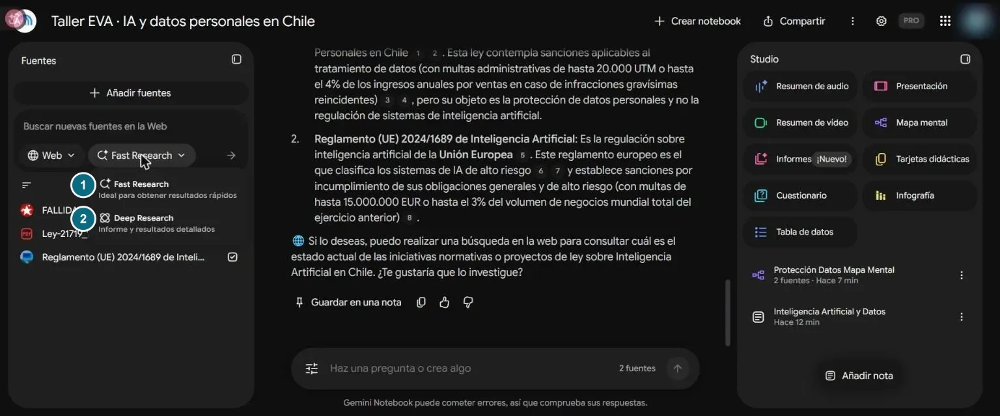
Figura 12
Elegir solo las fuentes oficiales
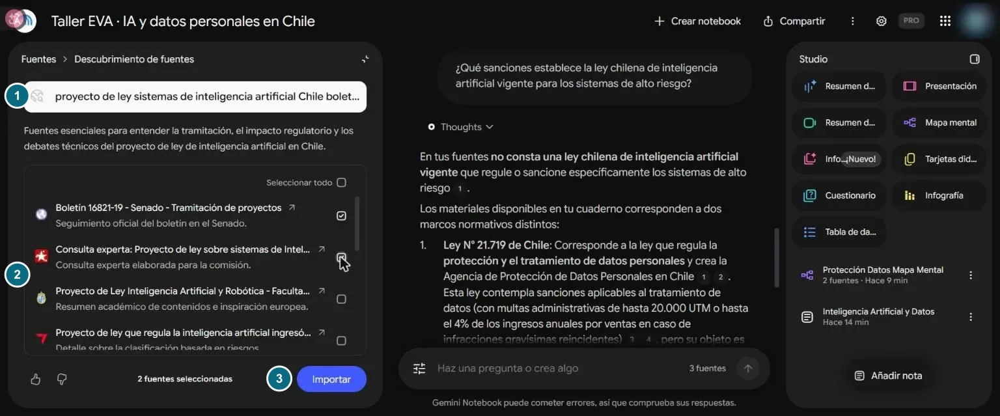
Estudiar con Studio
Objetivo: transformar tus fuentes en material de estudio, sin confundirlo con una fuente.
Tabla 3
Las herramientas de Studio y para qué le sirven a un estudiante o abogado
| Herramienta | Qué hace | Úsala para |
|---|---|---|
| Resumen de audio | Una conversación entre dos voces sobre tus fuentes. Formatos: Información detallada, Breve, Crítica o Debate | Repasar en el trayecto |
| Resumen de vídeo y Presentación | Diapositivas narradas o una presentación | Preparar una exposición |
| Mapa mental | Las ideas de tus fuentes en ramas | Ver la estructura de una ley |
| Informes | Un documento estructurado o un informe interactivo | Una guía de estudio o una ficha |
| Tarjetas didácticas y Cuestionario | Preguntas y respuestas para practicar | Preparar un control o el examen de grado |
| Infografía y Tabla de datos | Una imagen-resumen o una tabla con datos de las fuentes | Comparar plazos, sanciones u órganos |
Figura 13
Personalizar el resumen de audio
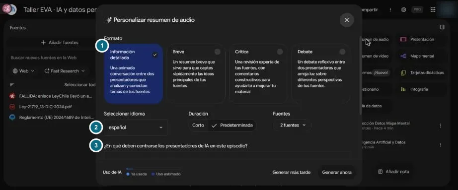
Figura 14
Un mapa mental de la Ley 21.719
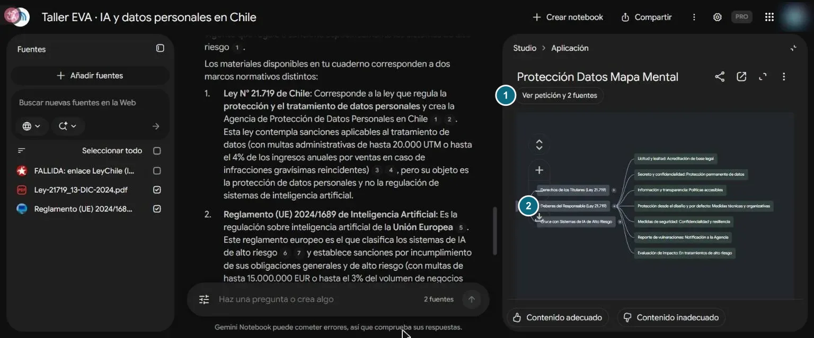
Guardar y exportar sin perder las citas
Objetivo: llevarte la respuesta verificada a un documento.
- Bajo cada respuesta, pulsa «Guardar en una nota». La nota queda en Studio y, mientras tenga citas, no se puede editar.
- En el menú ⋮ de la nota elige «Exportar a Documentos» (o «Exportar a Hojas de cálculo») (Figura 15).
- Abre el documento que se creó en tu Drive y mira las citas (Figura 16).
Figura 15
Exportar una nota
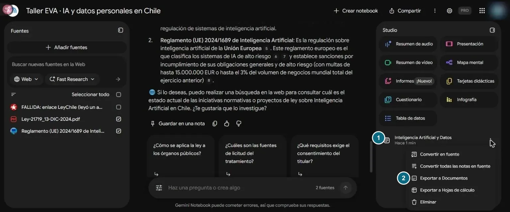
Figura 16
En el documento, las citas se vuelven números sueltos
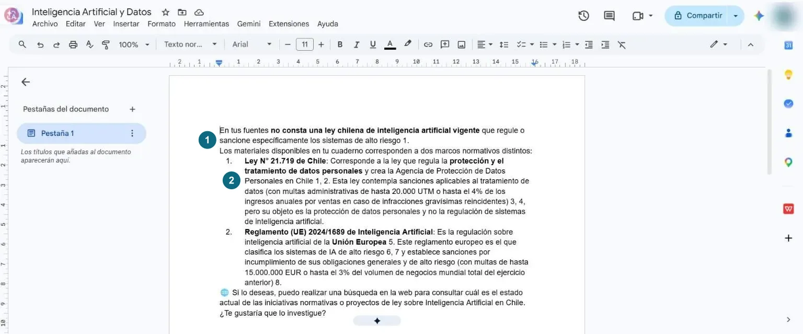
Redactar con Claude: el método de las dos llaves
Objetivo: convertir la nota verificada en una minuta, sin agregar nada que no esté respaldado.
Cada herramienta hace lo que mejor sabe. Claude busca, ordena, redacta y critica. Gemini Notebook responde desde tus fuentes y cita. Ninguna abre la puerta sola: tú eliges las fuentes, abres cada cita y firmas.
Figura 17
El método de las dos llaves
- En Claude, pulsa el botón «+» → «Conectores» y activa Google Drive (Figura 18). Si no aparece en tu plan, copia el texto de la nota y pégalo en el chat: el método funciona igual.
- Escribe el encargo del recuadro, con el nombre de tu documento.
- Revisa lo que marcó con [VERIFICAR] y compruébalo en la fuente oficial (Figuras 19 y 20).
Figura 18
Activar el conector de Google Drive en Claude
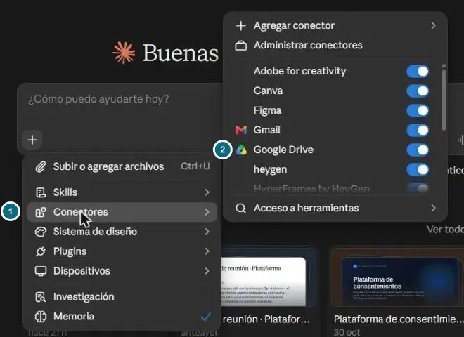
Busca en mi Google Drive el documento «[nombre de tu nota]» (lo exporté desde Gemini Notebook). Con SOLO lo que dice ese documento, redacta una minuta de cinco líneas para un cliente: ¿hay en Chile una ley de IA vigente y qué norma rige hoy los datos personales que procesa un sistema de IA? Reglas: no agregues nada que no esté en el documento; marca con [VERIFICAR] cada dato que el documento no respalde con un artículo; al final, lista lo que debo comprobar en la fuente oficial.
Figura 19
Claude lee la nota y advierte el problema de las citas
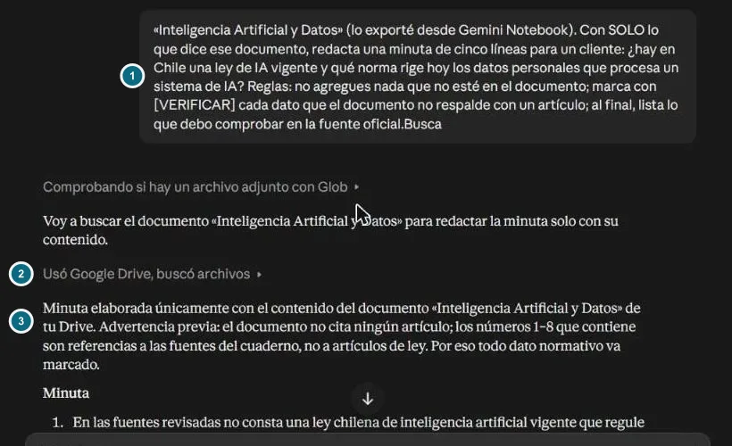
Figura 20
La minuta, con cada dato sin artículo marcado
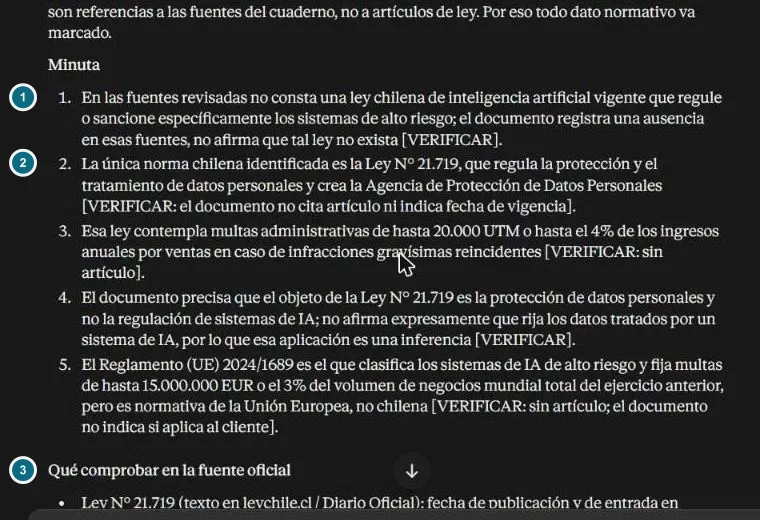
Si tienes un plan de pago, también puedes empezar el método por Claude, con su función «Investigación», para que te proponga las fuentes oficiales:
Necesito las fuentes oficiales y vigentes sobre [tema] en Chile. Dame solo normas, proyectos de ley y documentos de organismos públicos, con su enlace oficial (LeyChile, Diario Oficial, Senado, Cámara, Poder Judicial). Indica para cada una si está vigente, con vigencia diferida o en tramitación. No resumas su contenido: solo la lista.
Una receta para Claude: «fuentes primero»
Objetivo: no tener que repetir las reglas cada vez.
Una skill (receta) guarda las reglas del método para que Claude las aplique cuando le pidas redactar «solo con las fuentes»: citar artículo e inciso, marcar [VERIFICAR], distinguir «no consta» de «no existe», vigente de proyecto, y Chile de otros países.
⬇ Descargar la receta «fuentes primero» (ZIP)- En Claude, activa «Crear y editar archivos» en la configuración.
- Ve a Personalización → Skills → «Agregar» → «Subir Skill» y elige el ZIP (Figura 21).
Figura 21
Subir una receta a Claude
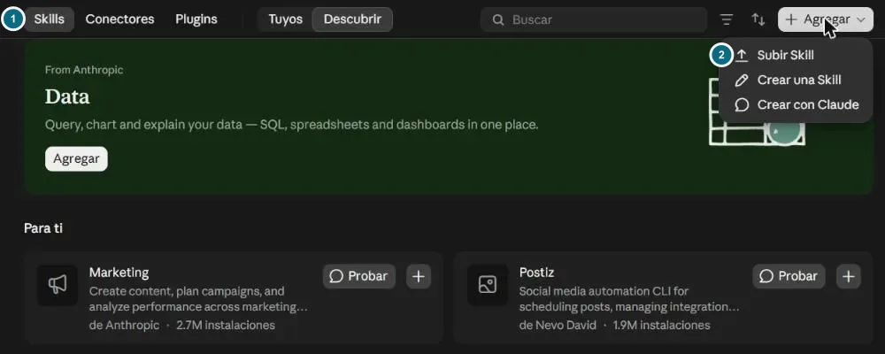
16 · Para quien quiera ir más lejosLa ruta avanzada: conectar Claude y el cuaderno con MCP
Hay tres maneras de pasar información entre las dos herramientas. Para la mayoría, las dos primeras bastan.
- Sin configurar nada
- Funciona en cualquier plan
- Funciones oficiales de ambas empresas
- Queda una copia que puedes revisar
- No es de Google: lo mantiene una persona
- Guarda en tu computador el acceso a tu cuenta
MCP es un estándar abierto que Anthropic presentó en noviembre de 2024 y que desde diciembre de 2025 administra una fundación de la Linux Foundation. Permite que Claude «enchufe» herramientas externas. Google no ofrece un conector oficial para los cuadernos personales. Uno de los más usados es comunitario, gemini-notebook-mcp-cli (licencia MIT, versión 0.15.9 del 2 de noviembre de 2026): se instala desde la terminal, inicia sesión en tu cuenta de Google y guarda en tu computador las «cookies» de esa sesión, que duran unas semanas.
17 · AplicacionesIdeas para estudiantes y para abogados
Si estudias Derecho
- Un cuaderno por ramo: el programa, las normas y los fallos que entran en la prueba.
- Examen de grado: tarjetas y cuestionarios de Studio desde los códigos oficiales; corrige con la fuente, no con la memoria.
- Fichas de fallos: pide hechos, decisión y considerandos, cada uno con su cita.
- Tesis o memoria: úsalo para encontrar el pasaje; cita siempre la fuente primaria, nunca al cuaderno.
- Mientras aprendes, intenta responder tú primero y usa la herramienta para corregirte.
Si ejerces
- Mapa normativo de un cliente: las normas aplicables y su vigencia, con artículo e inciso.
- Minuta o informe: el método de las dos llaves, con cada [VERIFICAR] resuelto antes de enviar.
- Revisar el escrito de la contraparte: sus citas, contra la fuente oficial.
- Contradicciones en una causa: pide comparar declaraciones o documentos, y verifica cada una en la carpeta.
- Documentos del cliente: solo anonimizados, o en una cuenta institucional con garantías y con su consentimiento informado.
18 · Lista de controlAntes de usar lo que te dio la IA
Tabla 4
Revisión rápida antes de entregar o firmar
| Revisión | Dónde | |
|---|---|---|
| Abrí cada fuente y leyó el documento, no un aviso | Guía de la fuente | |
| Todas las fuentes son oficiales y del mismo tema | Panel de fuentes | |
| Hice la pregunta trampa y respondió «No consta» | Chat | |
| Abrí cada cita y la comparé palabra por palabra | Chat | |
| Distinguí norma vigente, vigencia diferida y proyecto | Fuente oficial | |
| No mezclé normas de otros países con las chilenas | Fuente oficial | |
| Resolví cada [VERIFICAR] de Claude | LeyChile, Senado, EUR-Lex | |
| No hay datos de clientes que no debían estar | Todo el trabajo |
19 · AyudaErrores frecuentes
Tabla 5
Síntomas habituales, causa probable y qué hacer
| Lo que ves | Causa probable | Qué hacer |
|---|---|---|
| El resumen del cuaderno habla de «retrasos» o de un «navegador» | Una fuente vacía: la página no se dejó leer | Descarga el PDF oficial y súbelo (paso 2) |
| Responde cosas que no están en tus documentos | Faltan las reglas, o hay fuentes marcadas que no querías | Revisa «Configurar chat» y las casillas (pasos 3 y 4) |
| Cita un proyecto como si fuera ley | Mezcla de fuentes | Pide que distinga vigente, diferida y proyecto |
| Los números de cita no llevan a nada en el documento | Se exportó la nota | Pide el artículo dentro del texto antes de exportar (paso 9) |
| Claude agrega datos que no estaban | El encargo no limitó las fuentes | Usa «con SOLO lo que dice ese documento» o la receta |
| Fast Research trajo blogs y prensa | Todo viene marcado por defecto | Desmarca e importa solo lo oficial (paso 7) |
20 · Ética profesionalDeberes profesionales
Usar IA no cambia quién responde por el trabajo. Así lo dicen, en términos coincidentes, las guías más recientes:
- Colegio de Abogados de Chile (julio de 2026). Su guía de sugerencias pide que el abogado verifique personalmente toda cita que provenga de un sistema de IA; ese deber no se cumple con la verificación del propio sistema u otro. También pide cuidar la confidencialidad (ver el recuadro del capítulo 4).
- Academia Judicial (2026). Su guía para juezas y jueces, tras un ejercicio comparativo, describe a NotebookLM como «la herramienta de apoyo más segura para evitar errores de transcripción o interpretación», porque cita la fuente exacta, y advierte que su uso es referencial y bajo responsabilidad de quien lo usa.
- Poder Judicial. Aprobó Copilot Chat como herramienta de IA institucional (oficio circular de agosto de 2026). En octubre de 2026, la Corte Suprema acordó el texto de un futuro auto acordado sobre IA, que todavía no está vigente.
- American Bar Association (2024). Su Opinión 512, de Estados Unidos, resume los deberes de competencia, confidencialidad, comunicación con el cliente, supervisión, veracidad ante el tribunal y honorarios razonables.
21 · LímitesAlcance y límites de esta guía
Todos los pasos se ejecutaron el 2 de noviembre de 2026 en cuentas reales: Gemini Notebook con interfaz en español y plan de pago, y Claude con su conector de Google Drive. Las capturas muestran esa fecha; los botones cambian seguido, y la versión latinoamericana puede decir «agregar» donde aquí dice «añadir». Si algo no coincide, manda la ayuda oficial citada abajo. No pudimos confirmar si el conector de Drive de Claude está disponible en el plan gratuito: las páginas de Anthropic se contradicen.
Los datos jurídicos usados como ejemplo (la vigencia de la Ley 21.719, el proyecto de ley de IA y su postergación) son los del 2 de noviembre de 2026 y pueden cambiar. Esta guía enseña un método de trabajo. No es asesoría jurídica ni resuelve si es lícito subir un documento concreto a un servicio externo.
BibliografíaReferencias
Academia Judicial de Chile. (2026). Guía sobre inteligencia artificial para juezas y jueces (R. Lillo, E. Ruiz y C. Soto, Autores). https://ia.academiajudicial.cl/wp-content/uploads/2026/09/Guia-sobre-inteligencia-artificial-para-juezas-y-jueces.pdf
American Bar Association, Standing Committee on Ethics and Professional Responsibility. (2024). Formal opinion 512: Generative artificial intelligence tools. https://www.americanbar.org/content/dam/aba/administrative/professional_responsibility/ethics-opinions/aba-formal-opinion-512.pdf
Anthropic. (2024, 25 de noviembre). Introducing the Model Context Protocol. https://www.anthropic.com/news/model-context-protocol
Anthropic. (s.f.). Use Google Workspace connectors. Claude Help Center. Recuperado el 2 de noviembre de 2026, de https://support.claude.com/en/articles/10166901-use-google-workspace-connectors
Biblioteca del Congreso Nacional de Chile. (s.f.). Ley 21.719, que regula la protección y el tratamiento de los datos personales y crea la Agencia de Protección de Datos Personales. LeyChile. Recuperado el 2 de noviembre de 2026, de https://www.bcn.cl/leychile/navegar?idNorma=1209272
Charlotin, D. (2026). AI hallucination cases [Base de datos]. Recuperado el 2 de noviembre de 2026, de https://www.damiencharlotin.com/hallucinations/
Colegio de Abogados de Chile. (2026). Guía de sugerencias para el uso responsable de inteligencia artificial en el ejercicio profesional. https://colegioabogados.cl/wp-content/uploads/2026/07/Gu%C3%ADa-sobre-Uso-de-Sistemas-de-IA-por-Abogados-julio-2026.pdf
Corte Suprema de Chile. (2026, 22 de abril). Rol 23.322-2025. Poder Judicial. https://www.pjud.cl/prensa-y-comunicaciones/getRulingNew/77673
Dahl, M., Magesh, V., Suzgun, M. y Ho, D. E. (2024). Large legal fictions: Profiling legal hallucinations in large language models. Journal of Legal Analysis, 16(1), 64–93. https://doi.org/10.1093/jla/laae003
Google. (2026, 16 de julio). NotebookLM is now Gemini Notebook. The Keyword. https://blog.google/innovation-and-ai/products/gemini-notebook/notebooklm-gemini-notebook/
Google. (s.f.-a). Cómo agregar o descubrir fuentes nuevas para tu cuaderno. Ayuda de Gemini Notebook. Recuperado el 2 de noviembre de 2026, de https://support.google.com/gemininotebook/answer/16215270?hl=es-419
Google. (s.f.-b). Información sobre Gemini Notebook. Ayuda de Gemini Notebook. Recuperado el 2 de noviembre de 2026, de https://support.google.com/gemininotebook/answer/16164461?hl=es
Hagar, N., Agustianto, W. y Diakopoulos, N. (2025). Not wrong, but untrue: LLM overconfidence in document-based queries [Prepublicación]. arXiv. https://doi.org/10.48550/arXiv.2509.25498
jacob-bd. (2026). gemini-notebook-mcp-cli (Versión 0.15.9) [Software]. GitHub. https://github.com/jacob-bd/gemini-notebook-mcp-cli
Lewis, P., Perez, E., Piktus, A., Petroni, F., Karpukhin, V., Goyal, N., Küttler, H., Lewis, M., Yih, W., Rocktäschel, T., Riedel, S. y Kiela, D. (2020). Retrieval-augmented generation for knowledge-intensive NLP tasks. Advances in Neural Information Processing Systems, 33, 9459–9474. https://arxiv.org/abs/2005.11401
Liu, N. F., Lin, K., Hewitt, J., Paranjape, A., Bevilacqua, M., Petroni, F. y Liang, P. (2024). Lost in the middle: How language models use long contexts. Transactions of the Association for Computational Linguistics, 12, 157–173. https://doi.org/10.1162/tacl_a_00638
Magesh, V., Surani, F., Dahl, M., Suzgun, M., Manning, C. D. y Ho, D. E. (2025). Hallucination-free? Assessing the reliability of leading AI legal research tools. Journal of Empirical Legal Studies, 22(2), 216–242. https://doi.org/10.1111/jels.12413
Mata v. Avianca, Inc., No. 1:22-cv-01461 (PKC) (S.D.N.Y. 22 de junio de 2023). https://www.courtlistener.com/docket/63107798/mata-v-avianca-inc/
Reglamento (UE) 2024/1689 del Parlamento Europeo y del Consejo, de 13 de junio de 2024, por el que se establecen normas armonizadas en materia de inteligencia artificial. (2024). Diario Oficial de la Unión Europea, L 2024/1689. https://eur-lex.europa.eu/eli/reg/2024/1689/oj
Nota de autoría. Esta guía es la versión para egresados y estudiantes del taller «Claude + Gemini Notebook» de EVA ACADEMY. El texto y las figuras se prepararon con asistencia de IA (Claude) el 2 y 3 de noviembre de 2026, a partir de una investigación en tres rondas con verificación independiente; cada dato se contrastó con la fuente citada. Las capturas son propias y se tomaron en cuentas reales, con los datos personales difuminados o recortados; las de LeyChile pertenecen a la Biblioteca del Congreso Nacional y se reproducen con fines educativos. La revisión jurídica está pendiente.